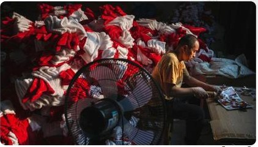

IN 90 SECONDS
先看懂，再读深
01
美国关税令中国对美圣诞饰品出口减少约 9.4 亿美元。
02
义乌商家转向德国、荷兰等市场，并重组供应链。
03
从圣诞节到斋月与春节，多元订单抵消地缘风险。
LINGOPRESS
MEMBERS' EDITION
购买后，店铺自动发货消息会发送网站链接与独立访问密钥。
关税、战争与不确定性，如何改变“世界超市”的订单流向？从一尊被拆解的圣诞老人，看全球贸易网络的韧性。

美国关税令中国对美圣诞饰品出口减少约 9.4 亿美元。
义乌商家转向德国、荷兰等市场，并重组供应链。
从圣诞节到斋月与春节，多元订单抵消地缘风险。
/ɡet əˈraʊnd/
ways of getting around the American tariffs
China's Christmas capital reveals how merchants adapt when tariffs and wars redraw the map of global trade.
义乌的韧性不只来自低价制造，更来自商家快速切换市场、产品和供应链的能力。
按主题回看，建立自己的外刊知识地图。
下一篇将在明日 07:00 发布开启浏览器提醒，不错过每日精读。
用间隔复习，把“眼熟”变成真正会用。